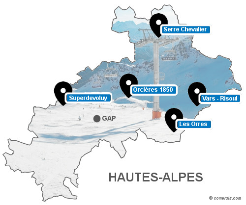

Hello, je suis Carla 👱‍♀️

J'ai 22 ans et je viens de Paris. Je vous enbarque dans mon aventure à travers ce site pour vous donner des bons plans. Merci à "Le Wagon" pour m'aider à créer cette page 🥳
Paris & Food
J'adore découvrir de nouveaux endroits dans Paris pour les partager avec mes amis. Trouver les meilleurs adresses food me réjouissent ! Une envie de pizza 🕠? Direction l'Oxymore la meilleure pizza française ! Plutôt une envie de Ramen 🜠? Kodawari Ramen (YokochÅ) vous ouvrent ses portes pour vivre une expérience japonaise !
Patinoire avec Synerglace ❄️

Rien de mieux que d'avoir une patinoire pour fêter un anniversaire, un mariage ou autre. Synerglace est là pour vous. La patinoire en glace naturelle de 72m2 "Ice4You" est faite pour vous ⛸️ ! Elle se trouve dans une remorque compacte et maniable permettant une installation fonctionnelle en moins de 24 heures.
Sports d'hiver
Quand l'hiver arrive, il est temps d'aller skier ⛷️ ! Retrouver dans les hautes-alpes plusieurs stations de ski alpin pour tous les niveaux. La station d'Ancelle est parfaite pour les débutants contrairement à la station de Merlette qui proposent des pistes plus compliquées.